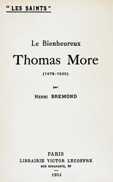

Project Gutenberg is a library of 79,462 free eBooks
Choose free eBooks to download or read online. You will find the world's great literature here with a focus on older works whose U.S. copyright has expired. Thousands of Project Gutenberg volunteers have digitized and proofread these books for you.
New Releases
find more

History
Literature
Science & Technology
Social Sciences & Society
Arts & Culture
Religion & Philosophy
Lifestyle & Hobbies
Health & Medicine
Education & Reference
Find Free eBooks
- Frequently Downloaded: Top 100, or ranked by popularity.
- Main Categories. The ones you'd find in any large bookstore.
- Reading Lists. Hand-curated by volunteers.
- Search Options. By author, title, subject, language, type, popularity, and more.
- Visit self.gutenberg.org for self-published eBooks at the World Library Foundation.
Project Gutenberg
- 100% Free — No fees, no registration, completely free
- No Apps Required — only regular Web browsers or eBook readers needed
- 55+ Years — Pioneering free eBooks since 1971
- Volunteer-based — hundreds of volunteers have contributed over the years
- Read about our late CEO, Dr. Greg Newby.
- Consider a small donation to help us digitize more books: donate
Most Popular
find more


Get Help
- Reading Options & Kindle: How to read and enjoy our ebooks.
- Frequently Asked Questions about Project Gutenberg.
- Help, How-To and FAQs: In depth information about many topics.
How to Help
- Distributed Proofreaders welcomes new volunteers. This is the main source of new Project Gutenberg eBooks. Getting started is easy, and just a page a day will help!
- Fix and improve Project Gutenberg by reporting errors, bugs, typos, and suggesting changes.
- Record audiobooks with our friends at LibriVox.
Useful Links
- About Project Gutenberg.
- Donating to Project Gutenberg.
- Feeds of new eBooks.
- Linking to Project Gutenberg and roboting or crawling the site.
- Partners and affiliates.
- Permissions, copyright, licensing, and trademark information.
- What does free eBook (No Cost or Freedom?) mean?
Audio Books
Audio books are a great way to enjoy literature. We recommend the following sources. All of them are digitizations of Project Gutenberg texts. They are freely available and in the public domain in the US.
- Project Gutenberg's 662 titles read by people
- Human-read audio books from LibriVox. LibriVox is a volunteer community that produces high-quality performances.
- The Project Gutenberg Open Audiobook Collection. Almost 5,000 computer-generated titles from 2023 via a Project Gutenberg collaboration with Microsoft and MIT.
- Project Gutenberg's audio books from 2003. They are computer-generated and listenable but relatively low quality compared to today's technology.